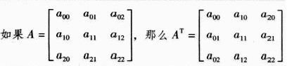

矩阵及几何变换
三维引擎的开发(一)
Created by bigwhiteshark
目录
- 矩阵及几何变换
- 坐标变换
- 投影
- 渲染
什么是计算机图形学
定义
- 广义
是利用计算机研究图形的表示、生成、处理、显示的学科。如图形硬件、图形标准、图形交互技术、光栅图形生成算法、曲线曲面造型、实体造型、真实感图形计算与显示算法，以及科学计算可视化、计算机动画、自然景物仿真、虚拟现实等 - 狭义
是一种使用数学算法将二维或三维图形转化为计算机显示器的栅格形式的科学
内容
- 建模(Modeling)
要在计算机中表示一个三维物体，首先要有它的几何模型表达。三维模型的建模是计算机图形学的基础 - 渲染(Rendering)
有了三维模型或场景，怎么把这些三维几何模型画出来 - 动画(Animation)
采用连续播放静止图像的方法产生物体运动的效果。 - 人机交互(HCI)
是指人与计算机之间以一定的交互方式或交互界面，来完成确定任务的人与计算机之间的信息交换过程。
流程
矩阵
- 矩阵的定义
- 矩阵的运算
- 矩阵转置
- 矩阵变换
- 组合变换
- 矩阵在前端中的应用
什么是矩阵
由 `m × n`个数`a_{ij}`排成的`m`行`n`列的数表称为`m`行`n`列的矩阵，简称`m × n`矩阵。记作：
$$ A = \left[\begin{matrix} a_{11} & ... & a_{1j} & & a_{1n} \\ ... & & & & ... \\ a_{i1} & & a_{ij} & & a_{in} \\ ... & & & & ... \\ a_{m1} & ... & a_{mj} & & a_{mn} \\ \end{matrix}\right]$$
相等矩阵：
对于两个具有相同维数的矩阵，我们把同行同列的两个元素称为对应元素。
两矩阵相等的充要条件是：它们具有相同的维数，并且所有的对应元素都相同。
特殊矩阵
| 零矩阵(0) | 单位矩阵(E) | 对角矩阵 |
| $$\left[\begin{matrix} 0 & 0 & 0 \\ 0 & 0 & 0 \\ 0 & 0 & 0 \\ \end{matrix}\right]$$ | $$\left[\begin{matrix} 1 & 0 & 0 \\ 0 & 1 & 0 \\ 0 & 0 & 1 \\ \end{matrix}\right]$$ | $$\left[\begin{matrix} 5 & 0 & 0 \\ 0 & 1 & 0 \\ 0 & 0 & 8 \\ \end{matrix}\right]$$ |
矩阵的加减
$$ A + B = \left[\begin{matrix} 1 & 3 & 5 \\ 4 & 1 & 3 \\ 2 & 1 & 2 \\ \end{matrix}\right] + \left[\begin{matrix} 4 & 3 & 2 \\ 1 & 3 & 5 \\ 6 & 5 & 9 \\ \end{matrix}\right] = \left[\begin{matrix} 5 & 6 & 8 \\ 5 & 4 & 8 \\ ? & ? & ? \\ \end{matrix}\right]$$
矩阵与标量相乘
$$ cA = 3 \times \left[\begin{matrix} 1 & 3 & 2 \\ 2 & 4 & 6 \\ 5 & 2 & 2 \\ \end{matrix}\right] = \left[\begin{matrix} 3 & 9 & 6 \\ ? & ? & ? \\ ? & ? & ? \\ \end{matrix}\right]$$
矩阵相乘
$$ A \times B = \left[\begin{matrix} 1 & 3 & 2 \\ 2 & 4 & 6 \\ \end{matrix}\right] \times \left[\begin{matrix} 3 & 1 \\ 1 & 2 \\ 7 & 4 \\ \end{matrix}\right] = \left[\begin{matrix} 20 & 15 \\ ? & ? \\ \end{matrix}\right]$$
矩阵转置

对于任意大小的矩阵 A 的转置矩阵表示为 `A^T`。 对于任意大小的矩阵，元素`a_(mn)` 在矩阵AT 中变为 `a_(nm)`
矩阵变换
- 平移变换
- 缩放变换
- 错切变换
- 旋转变换
- 组合变换
什么是变换
图形变换一般是指对图形的几何信息经过几何变换后产生新的图形。
二维变换
二维平移
`x' = x + T_x`
`y' = y + T_y`
二维平移
如果用向量形式来表示位移前后的两个点
$$ P = \left[\begin{matrix} x \\ y \end{matrix}\right] ， P' = \left[\begin{matrix} x' \\ y'\end{matrix}\right] $$
如果令
$$ T = \left[\begin{matrix} T_x \\ T_y \end{matrix}\right] $$
那么，可以用矩阵相加来表示P点的位移
$$ \left[\begin{matrix} x' \\ y'\end{matrix}\right] = $$ $$\left[\begin{matrix} x \\ y \end{matrix}\right] + $$ $$ \left[\begin{matrix} T_x \\ T_y \end{matrix}\right] $$ $$ = \left[\begin{matrix} x+T_x \\ x+T_y \end{matrix}\right]$$
记为：` P' = P + T`
二维平移
矩阵乘法
$$ \left[\begin{matrix} x' \\ y'\\ 1\\ \end{matrix}\right] = $$ $$ = \left[\begin{matrix} x+T_x \\ y+T_y\\ 1\\ \end{matrix}\right]$$ $$\times \left[\begin{matrix} x \\ y\\ 1\\ \end{matrix}\right]$$ $$\left[\begin{matrix} 1 & 0 & T_x \\ 0 & 1 & T_y \\ 0 & 0 & 1 \end{matrix}\right]$$
记为：` P' = T \times P `
二维平移
矩阵乘法(另一种表现形式)
$$ \left[\begin{matrix} x' & y' & 1 \end{matrix}\right] = $$ $$\left[\begin{matrix} x & y & 1\\ \end{matrix}\right]\times $$ $$\left[\begin{matrix} 1 & 0 & 0 \\ 0 & 1 & 0 \\ T_x & T_y & 1 \end{matrix}\right]$$ $$ = \left[\begin{matrix} x+T_x & y+T_y & 1\\ \end{matrix}\right]$$
记为：` P' = P \times T `
二维缩放
`x' = x \times S_x`
`y' = y \times S_y`
二维缩放
如果令
$$ S = \left[\begin{matrix} S_x & 0 \\ 0 & S_y \end{matrix}\right] $$
则比例变换可以表示成下面的矩阵形式：
$$ S = \left[\begin{matrix} x' \\ y' \end{matrix}\right] = $$ $$ \left[\begin{matrix} S_x & 0 \\ 0 & S_y \end{matrix}\right] $$ $$ \times \left[\begin{matrix} x \\ y \end{matrix}\right] = $$ $$ \left[\begin{matrix} xS_x \\ yS_y \end{matrix}\right] $$
记为：`P' = S \times P `
二维缩放
$$ \left[\begin{matrix} x' \\ y'\\ 1\\ \end{matrix}\right] = $$ $$= \left[\begin{matrix} S_x \times x \\ S_y \times y\\ 1\\ \end{matrix}\right]$$$$\times \left[\begin{matrix} x \\ y\\ 1\\ \end{matrix}\right]$$ $$ \left[\begin{matrix} S_x & 0 & 0 \\ 0 & S_y & 0 \\ 0 & 0 & 1 \end{matrix}\right] $$
二维对称
|
以y轴为对称线的对称变换 $$ \left[\begin{matrix} x'\\ y' \\ 1\\ \end{matrix}\right] = $$ $$\left[\begin{matrix} -1 & 0 & 0 \\ 0 & 1 & 0 \\ 0 & 0 & 1\end{matrix}\right] $$ $$\times \left[\begin{matrix} x \\ y\\ 1\\ \end{matrix}\right] $$ $$= \left[\begin{matrix} -x \\ y\\ 1\\ \end{matrix}\right] $$ |
|
以x轴为对称线的对称变换 $$ \left[\begin{matrix} x'\\ y' \\ 1\\ \end{matrix}\right] = $$ $$ \left[\begin{matrix} 1 & 0 & 0 \\ 0 & -1 & 0 \\ 0 & 0 & 1\end{matrix}\right] $$ $$\times \left[\begin{matrix} x \\ y\\ 1\\ \end{matrix}\right] $$ $$= \left[\begin{matrix} x \\ -y\\ 1\\ \end{matrix}\right] $$ |
二维对称
|
以原点为对称的对称变换 $$ \left[\begin{matrix} x'\\ y' \\ 1\\ \end{matrix}\right] = $$ $$ \left[\begin{matrix} -1 & 0 & 0 \\ 0 & -1 & 0 \\ 0 & 0 & 1\end{matrix}\right] $$ $$\times \left[\begin{matrix} x \\ y\\ 1\\ \end{matrix}\right] $$ $$= \left[\begin{matrix} -x \\ -y\\ 1\\ \end{matrix}\right] $$ |
|
以直线y=x为对称线的对称变换 $$ \left[\begin{matrix} x'\\ y' \\ 1\\ \end{matrix}\right] = $$ $$\left[\begin{matrix} 0 & 1 & 0 \\ 1 & 0 & 0 \\ 0 & 0 & 1\end{matrix}\right] $$ $$ \times \left[\begin{matrix} x \\ y\\ 1\\ \end{matrix}\right] $$ $$= \left[\begin{matrix} y \\ x\\ 1\\ \end{matrix}\right] $$ |
二维对称
|
以直线y=-x为对称线的对称变换 $$ \left[\begin{matrix} x'\\ y' \\ 1\\ \end{matrix}\right] = $$ $$ \left[\begin{matrix} 0 & -1 & 0 \\ -1 & 0 & 0 \\ 0 & 0 & 1\end{matrix}\right] $$ $$ \times \left[\begin{matrix} x \\ y\\ 1\\ \end{matrix}\right] $$ $$ = \left[\begin{matrix} -y \\ -x\\ 1\\ \end{matrix}\right] $$ |
二维错切
|
沿x方向的错切 $$ \left[\begin{matrix} x'\\ y' \\ 1\\ \end{matrix}\right] =$$ $$ \left[\begin{matrix} 1 & c & 0 \\ 0 & 1 & 0 \\ 0 & 0 & 1\end{matrix}\right] $$ $$ \times \left[\begin{matrix} x \\ y\\ 1\\ \end{matrix}\right] $$ $$ = \left[\begin{matrix} x + cy \\ y\\ 1\\ \end{matrix}\right] $$ |
|
沿y方向的错切 $$ \left[\begin{matrix} x'\\ y' \\ 1\\ \end{matrix}\right] =$$ $$ \left[\begin{matrix} 1 & 0 & 0 \\ c & 1 & 0 \\ 0 & 0 & 1\end{matrix}\right] $$ $$ \times \left[\begin{matrix} x \\ y\\ 1\\ \end{matrix}\right] $$ $$ = \left[\begin{matrix} x \\ y+cx\\ 1\\ \end{matrix}\right] $$ |
二维旋转
` x^'= rcos(\theta+\phi) =``rcos\thetacos\phi - rsin\thetasin\phi =` `xcos\theta-ysin\theta `
` y^'= rsin(\theta+\phi) = ``rcos\thetasin\phi + rsin\thetacos\phi =` `xsin\theta+ycos\theta `
二维旋转
相对于坐标原点的旋转变换公式
`x^'= xcos\theta-ysin\theta `
`y^'= xsin\theta+ycos\theta `
如果
$$ R = \left[\begin{matrix} cos\theta & -sin\theta \\ sin\theta & cos\theta \end{matrix}\right] $$
则
$$ \left[\begin{matrix} x'\\ y' \\ \end{matrix}\right] = $$ $$ \left[\begin{matrix} cos\theta & -sin\theta \\ sin\theta & cos\theta \end{matrix}\right] $$ $$ \times \left[\begin{matrix} x\\ y \\ \end{matrix}\right] $$ $$ = \left[\begin{matrix} xcos\theta - ysin\theta\\ xcos\theta + ysin\theta \ \\ \end{matrix}\right]$$
记为：`P^' = R \times P`
二维旋转
$$ \left[\begin{matrix} x' \\ y'\\ 1\\ \end{matrix}\right] = $$ $$ \left[\begin{matrix} cosθ & -sinθ & 0 \\ sinθ & cosθ & 0 \\ 0 & 0 & 1 \end{matrix}\right] $$ $$ \times \left[\begin{matrix} x \\ y\\ 1\\ \end{matrix}\right] $$ $$ = \left[\begin{matrix} xcosθ- ysinθ \\ xsinθ+ ycosθ\\ 1\\ \end{matrix}\right] $$
二维复合变换
绕任意点（或称基准点）（`x_r`,`y_r`）的旋转

| => | => | => |
二维复合变换
绕任意点（或称基准点）（`x_r`,`y_r`）的旋转
$$\left[\begin{matrix} x' \\ y'\\ 1\\ \end{matrix}\right] =$$$$ \left[\begin{matrix} x \\ y\\ 1\\ \end{matrix}\right]$$ $$\left[\begin{matrix} 1 & 0 & -x_r \\ 0 & 1 & -y_r \\ 0 & 0 & 1 \end{matrix}\right] \times $$$$\left[\begin{matrix} cosθ & -sinθ & 0 \\ sinθ & cosθ & 0 \\ 0 & 0 & 1 \end{matrix}\right] \times$$$$\left[\begin{matrix} 1 & 0 & x_r \\ 0 & 1 & y_r \\ 0 & 0 & 1 \end{matrix}\right] \times$$$$ = \left[\begin{matrix} xcosθ & - ysinθ & ( 1-cosθ)x_r+y_rsinθ\\ sinθ& cosθ& (1-cosθ)y_r-x_rsinθ\\ 0 & 0 & 1\end{matrix}\right] $$
二维复合变换
相对任意点的比例变换
| => | => | => |
二维复合变换
$$ \left[\begin{matrix} x'\\ y'\\ 1\\ \end{matrix}\right] = \left[\begin{matrix} a & c & e \\ b & d & f \\ p & q & s \end{matrix}\right] \times \left[\begin{matrix} x \\ y\\ 1\\ \end{matrix}\right]$$
矩阵变换组合特性
| <> |
示例
要对一个三角形（中心<75，93>）以中心旋转左转90°，那么一共需要执行如下几步：
① 将三角形的中心移动到原点，即x 轴左移75 个单位，y 轴移动93 个单位。
② 对三角形进行旋转。
③ 将中心点移回<75，93>处。
$$ \left[\begin{matrix} x'\\ y'\\ 1\\ \end{matrix}\right] = \left[\begin{matrix} 1 & 0 & 75 \\ 0 & 1 & 93 \\ 0 & 0 & 1 \end{matrix}\right] \left[\begin{matrix} cos90^\circ & -sin90^\circ & 0 \\sin90^\circ & cos90^\circ& 0 \\ 0 & 0 & 1\end{matrix}\right] \left[\begin{matrix} 1 & 0 & -75 \\ 0 & 1 & -93 \\ 0 & 0 & 1 \end{matrix}\right] \left[\begin{matrix} x \\ y\\ 1\\ \end{matrix}\right] $$ $$ = \left[\begin{matrix} 0 & -1 & 168 \\ 1 & 0 & 18 \\ 0 & 0 & 1 \end{matrix}\right] \left[\begin{matrix} x \\ y\\ 1\\ \end{matrix}\right] $$
三维变换
笛卡儿坐标系

三维平移
矩阵加法
$$ \left[\begin{matrix} x' \\ y'\\ z' \\ \end{matrix}\right] = $$ $$\left[\begin{matrix} x \\ y\\ z\\ \end{matrix}\right] + $$ $$ \left[\begin{matrix} d_x \\ d_y\\ d_z\\ \end{matrix}\right] $$ $$= \left[\begin{matrix} x+d_x \\ y+d_y\\ z+d_z\\ \end{matrix}\right]$$
矩阵乘法
$$ \left[\begin{matrix} x'\\ y'\\ z'\\ 1\\ \end{matrix}\right] = $$ $$ \left[\begin{matrix} 1 & 0 & 0 & d_x \\ 0 & 1 & 0 & d_y \\ 0 & 0 & 1 & d_z \\ 0 & 0 & 0 & 1\end{matrix}\right] $$ $$ \times \left[\begin{matrix} x \\ y\\ z\\ 1\\ \end{matrix}\right] $$ $$ = \left[\begin{matrix} x+d_x \\ y+d_y\\ z+d_z\\ 1\\ \end{matrix}\right] $$
三维平移
矩阵乘法(另一种表现形式,旋转、错切、对称类同）
$$ \left[\begin{matrix} x' & y' & z' & 1 \end{matrix}\right] = $$ $$ \left[\begin{matrix} x & y & z & 1\\ \end{matrix}\right] \times $$ $$ \left[\begin{matrix} 1 & 0 & 0 & 0 \\ 0 & 1 & 0 & 0 \\ 0 & 0 & 1 & 0 \\ d_x & d_y & d_z & 1\end{matrix}\right] $$ $$ = \left[\begin{matrix} x+d_x & y+d_y & z+d_z & 1 \end{matrix}\right] $$
三维缩放
$$ \left[\begin{matrix} x'\\ y'\\ z'\\ 1\\ \end{matrix}\right] = $$ $$ \left[\begin{matrix} S_x & 0 & 0 & 0 \\ 0 & S_y& 0 & 0 \\ 0 & 0 & S_z & 0 \\ 0 & 0 & 0 & 1\end{matrix}\right] $$ $$ \times \left[\begin{matrix} x \\ y\\ z\\ 1\\ \end{matrix}\right] $$ $$ = \left[\begin{matrix} S_x \times x \\ S_y \times y\\ S_z \times z\\ 1\\ \end{matrix}\right] $$
三维旋转
三维旋转
绕z轴旋转θ角
$$ \left[\begin{matrix} x'\\ y'\\ z'\\ 1\\ \end{matrix}\right] = $$ $$ \left[\begin{matrix} cosθ & -sinθ & 0 & 0 \\ sinθ & cosθ& 0 & 0 \\ 0 & 0 & 1 & 0 \\ 0 & 0 & 0 & 1\end{matrix}\right] $$ $$ \times \left[\begin{matrix} x \\ y\\ z\\ 1\\ \end{matrix}\right] $$ $$ = \left[\begin{matrix} xcosθ-ysinθ\\ xsinθ+ycosθ\\ z\\ 1\\ \end{matrix}\right]$$
三维旋转
绕x方向旋转θ角
$$ \left[\begin{matrix} x'\\ y'\\ z'\\ 1\\ \end{matrix}\right] = $$ $$ \left[\begin{matrix} 1 & 0 & 0 & 0 \\0 &cosθ & -sinθ & 0 \\ 0 & sinθ & cosθ& 0 \\ 0 & 0 & 0 & 1\end{matrix}\right] $$ $$ \times \left[\begin{matrix} x \\ y\\ z\\ 1\\ \end{matrix}\right] $$ $$ = \left[\begin{matrix} x \\ ycosθ-zsinθ\\ ysinθ+zcosθ\\ 1\\ \end{matrix}\right]$$
三维旋转
绕y方向旋转θ角
$$ \left[\begin{matrix} x'\\ y'\\ z'\\ 1\\ \end{matrix}\right] = $$ $$ \left[\begin{matrix} cosθ & 0 & sinθ & 0 \\ 0 & 1 & 0 & 0 \\-sinθ & 0 & cosθ & 0 \\ 0 & 0 & 0 & 1\end{matrix}\right] $$ $$ \times \left[\begin{matrix} x \\ y\\ z\\ 1\\ \end{matrix}\right] = $$ $$ \left[\begin{matrix} xcosθ+ zsinθ \\ y \\ -xsinθ+ zcosθ\\ 1\\ \end{matrix}\right] $$
三维复合变换
$$ \left[\begin{matrix} x'\\ y'\\ z'\\ 1\\ \end{matrix}\right] = \left[\begin{matrix} a & d & g & l \\ b & e & h & m \\c & f & i & n \\ p & q & r & s\end{matrix}\right] \times \left[\begin{matrix} x \\ y\\ z\\ 1\\ \end{matrix}\right]$$
三维对称变换
三维对称变换可以是关于给定对称轴的或者是关于给定对称平面的变换。
三维对称变换(面)
关于xoy面的对称
$$ \left[\begin{matrix} x'\\ y'\\ z'\\ 1\\ \end{matrix}\right] = $$ $$ \left[\begin{matrix} 1 & 0 & 0 & 0 \\ 0 & 1 & 0 & 0 \\ 0 & 0 & -1 & 0 \\ 0 & 0 & 0 & 1\end{matrix}\right] $$ $$ \times \left[\begin{matrix} x \\ y\\ z\\ 1\\ \end{matrix}\right] = $$ $$ \left[\begin{matrix} x \\ y \\ -z \\ 1\\ \end{matrix}\right] $$
关于xoz面的对称
$$ \left[\begin{matrix} x'\\ y'\\ z'\\ 1\\ \end{matrix}\right] = $$ $$ \left[\begin{matrix} 1 & 0 & 0 & 0 \\ 0 & -1 & 0 & 0 \\ 0 & 0 & 1 & 0 \\ 0 & 0 & 0 & 1\end{matrix}\right] $$ $$ \times \left[\begin{matrix} x \\ y\\ z\\ 1\\ \end{matrix}\right] = $$ $$ \left[\begin{matrix} x \\ -y \\ z \\ 1\\ \end{matrix}\right] $$
关于yoz面的对称
$$ \left[\begin{matrix} x'\\ y'\\ z'\\ 1\\ \end{matrix}\right] = $$ $$ \left[\begin{matrix} -1 & 0 & 0 & 0 \\ 0 & 1 & 0 & 0 \\ 0 & 0 & 1 & 0 \\ 0 & 0 & 0 & 1\end{matrix}\right] $$ $$ \times \left[\begin{matrix} x \\ y\\ z\\ 1\\ \end{matrix}\right] = $$ $$ \left[\begin{matrix} -x \\ y \\ z \\ 1\\ \end{matrix}\right] $$
三维对称变换(轴)
关于X轴的对称
$$ \left[\begin{matrix} x'\\ y'\\ z'\\ 1\\ \end{matrix}\right] = $$ $$ \left[\begin{matrix} 1 & 0 & 0 & 0 \\ 0 & -1 & 0 & 0 \\ 0 & 0 & -1 & 0 \\ 0 & 0 & 0 & 1\end{matrix}\right] $$ $$ \times \left[\begin{matrix} x \\ y\\ z\\ 1\\ \end{matrix}\right] = $$ $$ \left[\begin{matrix} x \\ -y \\ -z \\ 1\\ \end{matrix}\right] $$
关于Y轴的对称
$$ \left[\begin{matrix} x'\\ y'\\ z'\\ 1\\ \end{matrix}\right] = $$ $$ \left[\begin{matrix} -1 & 0 & 0 & 0 \\ 0 & 1 & 0 & 0 \\ 0 & 0 & -1 & 0 \\ 0 & 0 & 0 & 1\end{matrix}\right] $$ $$ \times \left[\begin{matrix} x \\ y\\ z\\ 1\\ \end{matrix}\right] = $$ $$ \left[\begin{matrix} -x \\ y \\ -z \\ 1\\ \end{matrix}\right] $$
关于Z轴的对称
$$ \left[\begin{matrix} x'\\ y'\\ z'\\ 1\\ \end{matrix}\right] = $$ $$ \left[\begin{matrix} -1 & 0 & 0 & 0 \\ 0 & -1 & 0 & 0 \\ 0 & 0 & 1 & 0 \\ 0 & 0 & 0 & 1\end{matrix}\right] $$ $$ \times \left[\begin{matrix} x \\ y\\ z\\ 1\\ \end{matrix}\right] = $$ $$ \left[\begin{matrix} -x \\ -y \\ z \\ 1\\ \end{matrix}\right] $$
三维错切变换
沿x方向的错切
$$ \left[\begin{matrix} x'\\ y'\\ z'\\ 1\\ \end{matrix}\right] = $$ $$ \left[\begin{matrix} 1 & d & g & 0 \\ 0 & 1 & 0 & 0 \\ 0 & 0 & 1 & 0 \\ 0 & 0 & 0 & 1\end{matrix}\right] $$ $$ \times \left[\begin{matrix} x \\ y\\ z\\ 1\\ \end{matrix}\right] = $$ $$ \left[\begin{matrix} x+dy+gz \\ y \\ z \\ 1\\ \end{matrix}\right] $$
沿y方向的错切
$$ \left[\begin{matrix} x'\\ y'\\ z'\\ 1\\ \end{matrix}\right] = $$ $$ \left[\begin{matrix} 1 & 0 & 0 & 0 \\ b & 1 & h & 0 \\ 0 & 0 & 1 & 0 \\ 0 & 0 & 0 & 1\end{matrix}\right] $$ $$ \times \left[\begin{matrix} x \\ y\\ z\\ 1\\ \end{matrix}\right] = $$ $$ \left[\begin{matrix} x \\ bx+y+hz \\ z \\ 1\\ \end{matrix}\right] $$
沿z方向的错切
$$ \left[\begin{matrix} x'\\ y'\\ z'\\ 1\\ \end{matrix}\right] = $$ $$ \left[\begin{matrix} 1 & 0 & 0 & 0 \\ 0 & 1 & 0 & 0 \\ c & f & 1 & 0 \\ 0 & 0 & 0 & 1\end{matrix}\right] $$ $$ \times \left[\begin{matrix} x \\ y\\ z\\ 1\\ \end{matrix}\right] = $$ $$ \left[\begin{matrix} x \\ y \\ cx+fy+z \\ 1\\ \end{matrix}\right] $$
三维错切变换(复合)
$$ \left[\begin{matrix} x'\\ y'\\ z'\\ 1\\ \end{matrix}\right] = $$ $$ \left[\begin{matrix} 1 & d & g & 0 \\ b & 1 & h & 0 \\ c & f & 1 & 0 \\ 0 & 0 & 0 & 1\end{matrix}\right] $$ $$ \times \left[\begin{matrix} x \\ y\\ z\\ 1\\ \end{matrix}\right] = $$ $$ \left[\begin{matrix} x+dy+gz \\ bx+y+hz \\ cx+fy+z \\ 1\\ \end{matrix}\right] $$
齐次坐标
基本思想：
把一个n维空间的几何问题，转换到n＋1维空间中去解决。
形式：
用一个有n＋1个分量的向量去表示一个有n个分量的向量的方法 如二维平面上的点（x，y）的齐次坐标表示为（ hx，hy ，h），h是任一不为0的比例系数。 齐次坐标表示（x，y，h）转换成 二维笛卡儿直角坐标（x/h，y/h）
规格化齐次坐标
齐次坐标表示不是唯一的，通常将h＝1时的齐次坐标称为规格化的齐次坐标。
矩阵在前端中的应用
- CSS3
- Canvas
- SVG
- IE下滤镜
转换方法
CSS3 transform 属性：
http://www.w3school.com.cn/cssref/pr_transform.asp
Canvas的转换方法：